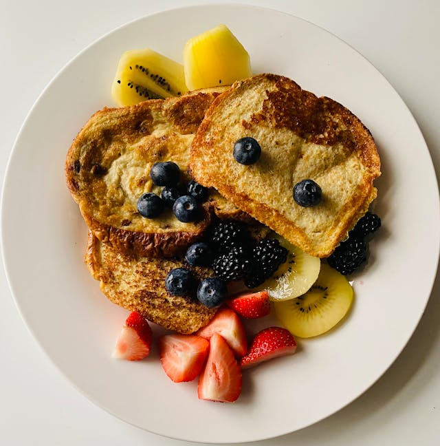

Home
French Toast

Another toast recipe, you can tell what is popular in our household.
Ingredients:
Brioche bread (way tastier than alternatives)
Steps:
Mix egg, milk and cinnamon together in a bowl
Use the butter to oil your griddle or pan
Dredge the bread on both sides in your mix
Sear on cooking surface until nice and crispy exterior develops
Serve with maple syrup, fresh fruit, peanut butter, or whatever tickles your pickle
Note: I have no idea if this is how you actually make french toast, I think it is though?